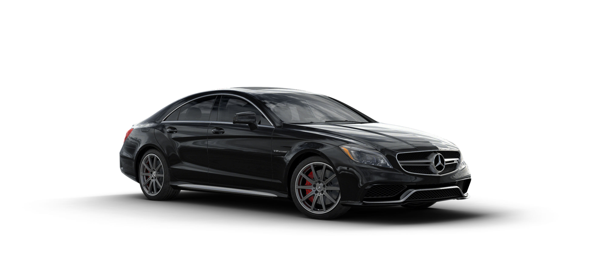

Mercedes-Benz CLS 63 AMG este un automobil de lux care combină eleganța cu performanța extremă, fiind conceput pentru a oferi o experiență de condus rafinată și puternică în același timp. Acest model impresionează prin liniile sale fluide și aerodinamice, dar și prin tehnologiile moderne integrate, care asigură confort și siguranță la cel mai înalt nivel. Este o alegere ideală pentru cei care doresc să îmbine stilul sofisticat cu adrenalina specifică mașinilor sport.
Modelul este echipat cu un motor V8 biturbo care dezvoltă peste 500 de cai putere, oferind accelerații rapide și o reacție promptă la orice apăsare a pedalei de accelerație. Performanțele sale sunt completate de un sistem avansat de tracțiune și de o cutie de viteze optimizată pentru schimbări rapide și line. Aceste caracteristici transformă fiecare deplasare într-o experiență dinamică și captivantă, indiferent de condițiile de drum.
Designul său sportiv și interiorul premium îl fac unul dintre cele mai dorite automobile, atât din punct de vedere estetic, cât și funcțional. Habitaclul este realizat din materiale de înaltă calitate, precum pielea fină și inserțiile din lemn sau aluminiu, oferind un ambient elegant și confortabil. În plus, sistemele de infotainment și asistență pentru șofer contribuie la o experiență modernă, făcând din acest model nu doar o mașină, ci un simbol al rafinamentului și performanței.